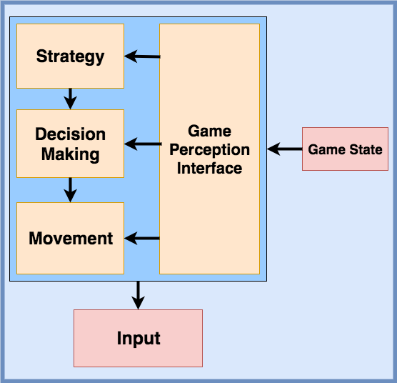
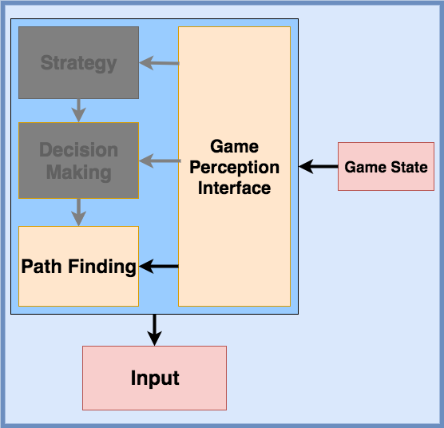

Welcome to a mutlipart series of posts where I'm going to discuss implementing a game, very similar to Unblock Me and Rush Hour, sample screenshots in figure one. I decided to use Python 2.7.14, but the goal I aim to make the majority of these tutorials language independent so anyone can follow along. To facilitate this, there will be a focus on design decisions so that these go beyond a copy and paste tutorials. Upon completion of the game, I plan to go into creating a server to solve puzzles, generating boards on the fly for the game, and looking into valid heuristics for search techinques in the game.
Figure 1: Left image shows Unblock Me and right image shows Rush Hour
Building Requirements
We will be implementing a board game which features the one main function of sliding pieces to utlimately solve the puzzle by getting the red block, hereby known as the main piece, to the goal. In both games, the goal is the main piece in the same place, upper right one space below the corner. This rule could be enforced in the software, but is really not necessary. To get the main piece to the goal the user will have to slide pieces around the board to free space for the main piece. A restriciton is that each piece can only move in a certain direction, horizontal or vertical. For example, a piece with the dimensions of three vertial and one can move up or down but not left or right. Similarly a one vertical and two horizontal piece can move horizontally but not vertically. In the future, our representation of a board can take advantage of this fact to simplify map definiitons.
We now now arrived at the most important task a programmer will ever have, building the requirements. When working with other people it is essential to build this list out so everyone is on the same page. The more thorough this list is, the easier your life as a programmer will be in the future. It also has the added benefit of allowing you to think about the problem as a whole which will allow you to break it into smaller chunks. An important note is that it is possible to go overboard. Finding the right balance between brevity for clarity and depth for specification is paramount. For example, you could write down each functionality of the application and every single unique use case that that function will deal with. In my experience I have found that a higher level requirements document will work best when working with non-programmers. With that tangent aside here is a higher level list of our requirements:
The board will be represented by a series of blocks in a grid.
A piece is represented by a series of blocks that are identified on the board by a unique id that is one character in length.
Pieces can slide horizontally or vertically, depending on their orientation.
Sliding means that it will move positions on the board. This can be either by one space or more.
A piece cannot slide through another piece to get to its target position.
A piece that can slide horizontally will have more components in the horizontal direction than the vertical.
A piece that can slide vertically will have more components in the vertical direction than the the horizontal.
All pieces cannot slide into the goal besides the main piece.
The main piece, when in the goal, will solve the puzzle.
For more on creating a requirements document you can view BelitSoft's standard.This is only a barebones set of requirements for the game and much more is required in a professional, and even academic, setting. Regardless, this provides a clear scope and gives everyone a solid idea as to what is going to be built.
Software Structure
Despite having requirements we still have more work to do before we can write our first line of code. Next up is disussing the direction we see the software taking and the algorithms we know we will need to implement. At the start of this project I can think of seven:
Text file to describe a board and ability to parse said text file.
Should be able to validate the generated map is valid.
If we hadn't planned on implementing search algorithms or any AI, algorithms three and five could be safely removed along with six. Three can be moved because after the player has made their move can we either validate or invalidate it. With a better GUI we can also check if each move is valid as the move and prevent invalid directions to drag the piece in. Five is only important if we want to keep track of previous states which is important for search algorithms but not for any of our other requirements. If we, however, decided to add an undo function then five would become necessary again. Despite the extra leg work required for search algorithms, it will be well worth the effort because we can now learn about the common structure of board game AI and how it can helps us create an easy to use interface when we are implementing search algorithms.
Board Game AI Structure
Due to the simplicity of our game we can actually vastly simplify the structure of our AI aswell as the game interface itself. In figure 2 we see the difference between the two structures where one includes complicated tasks, such as defining a strategy and making decisions based on the strategy, whereas the second only requires pathfinding to work. With this in mind we can move onto defining the functionality required to create a helpful interface for our AI.


Figure 2: The right image shows a standard game AI whereas the right image displays a pathfinding AI.
We can use these figures to define the components we want our game states to expose
Next Time
In the next post we'll actually start with project structure and then the start of implement the board game. Along the way we'll discuss various approaches to solve the problems this game presents and why I ultimately went with each decision. At anytime feel free to checkout the [github page](https://github.com/bi3mer/UnBlockMeSolver) where this project is hosted, please note that it does contains spoilers for what is to come.